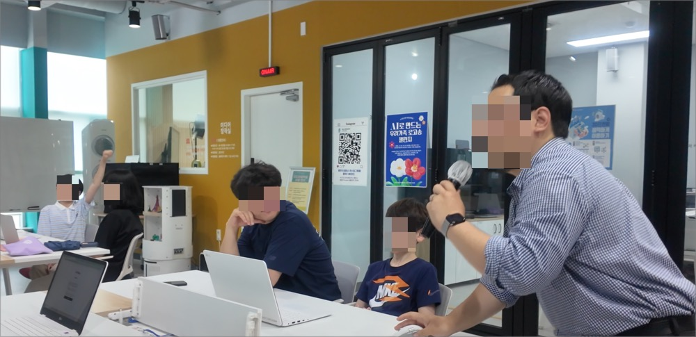
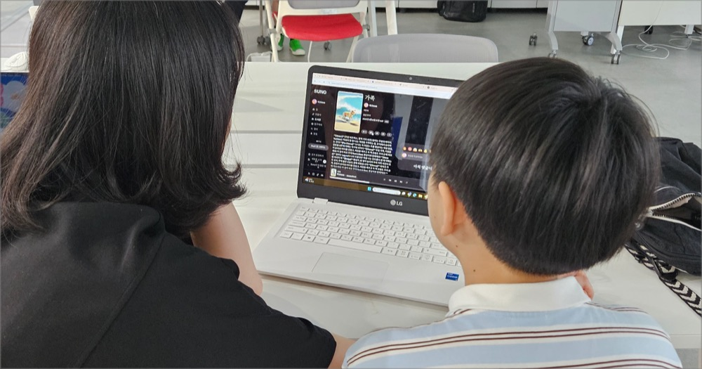
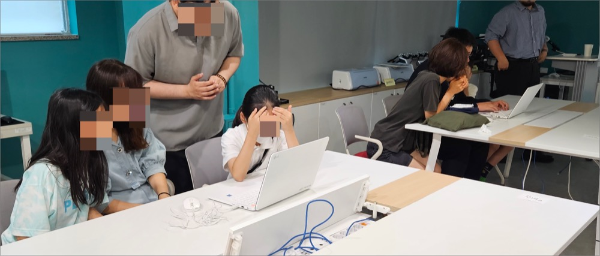
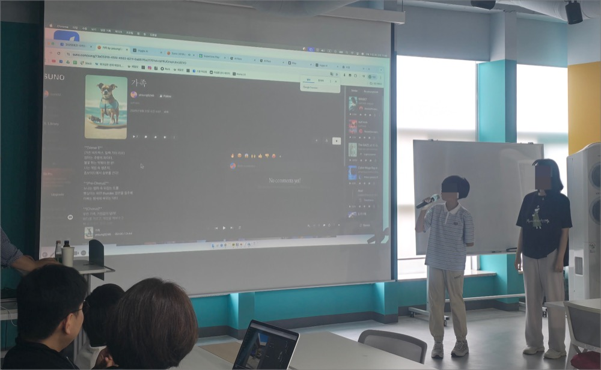
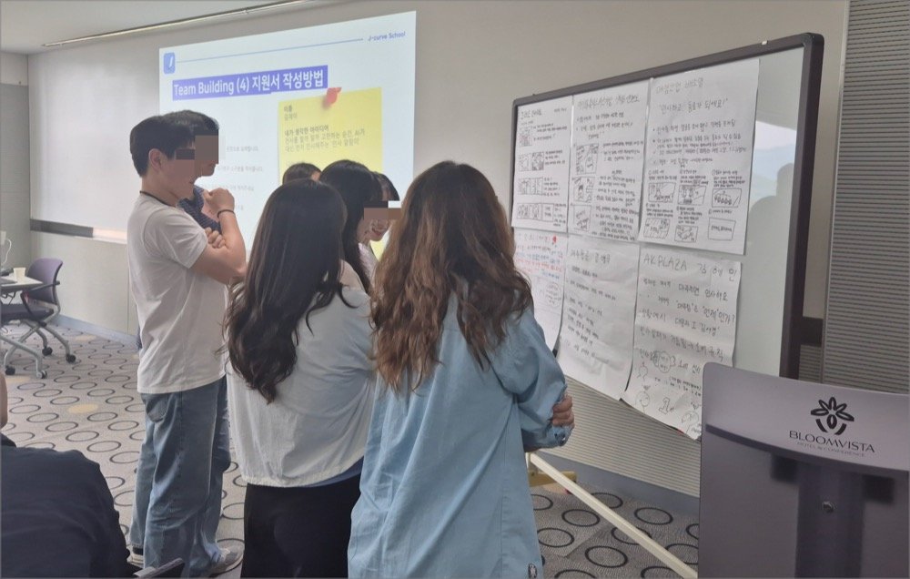
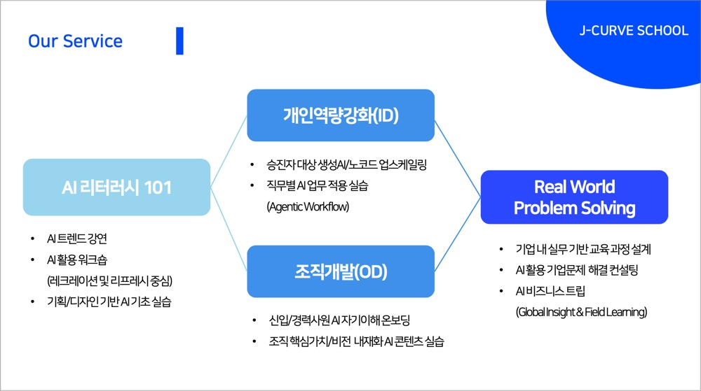

요즘 AI 교육, 어디까지 와보셨나요? 기업은 물론, 학교와 도서관까지 AI를 배우는 현장이 확장되고 있습니다.
이번에 저희 팀제이커브가 함께한 곳은 용인시 수지도서관입니다. 지난 6월, 이곳에서는 가족 단위의 주민들을 위한 AI 레크레이션이 열렸습니다.
‘가족이 함께 AI를 체험한다’는 콘셉트. 그 말만으로도 따뜻함이 느껴지지 않나요?
단순히 도구를 배우는 것이 아니라, "함께 만든다", "즐긴다", 그리고 "기억에 남는다"는 감정이 있는 레크레이션. 이번 교육은 그런 방향에 맞춰 설계되었습니다.
이번 프로그램은 용인시 수지도서관의 기획 아래, 수지구에 거주하는 5팀의 가족이 참여하는 형태로 구성되었습니다. 총 20명의 참여자들은 AI와 함께 노래를 만들고, 영상도 제작하며 가족간의 화합을 이끌어냈는데요.
가족 단위의 참여라 아이들도 많았지만, 놀랍게도 누구 하나 지루해하지 않았습니다.
아이도, 부모도 몰입한 AI 체험 콘텐츠
이번 AI 레크레이션의 핵심은 가족이 함께 무언가를 ‘만드는’ 경험이었습니다. 그래서 단순히 이론만 배우는 교육은 지양했죠.
대신, 챗GPT와 Suno, Pika, Viggle 같은 최신 도구들을 직접 활용해 가족마다 자신만의 로고송과 짧은 영상 콘텐츠를 만들었습니다.

첫 단계는 챗GPT로 가사 만들기였습니다. 가족의 특징을 한 줄씩 적어보며 서로에 대해 이야기하고 웃기도 하면서, 마지막에 ‘우리 가족만의 노래 가사’를 완성하게 되었죠.
그다음은 음악 제작 AI Suno의 차례였습니다. 아이들이 적은 가사가 음악으로 바뀌는 순간, 모두가 감탄을 터뜨렸는데요.
“진짜 노래네!”라는 말이 여기저기서 쏟아졌고, 계속 재생하며 따라 부르기도 했습니다.

여기서 끝이 아니었습니다. AI 영상 제작 도구 Pika와 Viggle을 활용해 노래에 어울리는 영상까지 직접 만들었는데요,
누구는 애니메이션처럼, 누구는 뮤직비디오처럼 꾸미며 개성을 담아냈습니다. 아이들은 AI의 결과물에 즐거워했고, 부모들은 “이렇게 쉽고 직관적일 줄 몰랐다”며 놀랐습니다. 무엇보다, 가족 간의 협업과 교감이 자연스럽게 일어나는 모습이 인상적이었죠.
요컨대 기술은 보조일 뿐, 중심은 언제나 ‘사람’이라는 걸 다시금 느낄 수 있는 시간이었습니다.
기술보다 사람에 집중한 이유
AI 교육이라고 하면 보통, 복잡한 원리나 툴 사용법을 떠올리기 쉽습니다. 그러나 팀제이커브는 늘 묻습니다.
“우리가 이 기술을 왜, 누구를 위해 배우는가?”
이번 수지도서관 레크레이션도 마찬가지였습니다. 목표는 단순한 ‘기능 숙지’가 아닌, 기술을 매개로 사람 간의 감정이 연결되는 경험이었죠.
그래서 우리는 가족에게 익숙한 소재를 선택했습니다. 바로 '우리 가족 이야기'를 AI로 표현하는 것.
가사를 쓰기 위해 자연스럽게 서로의 특징을 말하고, 노래를 만들며 각자의 취향을 나누고, 영상을 제작하며 역할을 분담하고 협력합니다.

AI가 어렵지 않다는 것도 중요하지만, 더 중요한 건 그 과정을 통해 사람이 더 가까워졌다는 사실입니다.
이러한 경험은 비단 가족에게만 필요한 게 아닙니다.
팀워크, 협업, 창의적 표현… 조직 문화를 신경쓰는 분들이라면, 이 키워드들이 익숙하게 들릴지도 모르겠습니다.
그리고 바로 이 지점에서, HR 관점에서의 워크숍 인사이트로 자연스럽게 이어질 수 있겠죠.
이번 레크레이션이 주는 인사이트, HR이 본다면?
“가족 단위 프로그램이라면서, 왜 이렇게 재밌어 보이지?” 이 글을 읽는 HR 담당자분들 중 일부는 이렇게 생각하셨을지도 모르겠습니다.
그런데, 바로 그 느낌이 핵심입니다. 이 프로그램은 ‘조직 내 워크숍’에도 그대로 응용할 수 있기 때문입니다.
가족이 모여 함께 만든 로고송과 영상. 그 과정을 회사 팀원들이 함께 한다고 상상해볼까요?
서로의 강점을 이야기하고, 공동의 콘텐츠를 만들어가며, 웃음과 감동을 나누는 시간 자체로 훌륭한 AI 기반 팀빌딩 워크숍이 됩니다.
게다가 사용하는 툴은 모두 비전문가도 쉽게 접근 가능한 생성형 AI 도구입니다. 챗GPT, Suno, Pika, Viggle은 직관적이고, AI에 익숙하지 않은 사람도 빠르게 몰입할 수 있습니다.

AI 트렌드 교육을 겸하면서도, 협업과 커뮤니케이션, 창의력까지 자극할 수 있는 콘텐츠. 그리고 끝나고 나면 하나의 ‘결과물’까지 남는 워크숍.
무엇보다 중요한 건, 참여자 스스로 “우리가 해냈다”는 경험을 갖는다는 점입니다.
결국, 이 프로그램은 ‘AI 교육’이면서도 ‘사람 중심’이라는 방향을 지향합니다. 그리고 그런 교육이야말로, 지금 우리 조직에 꼭 필요한 방식 아닐까요?
팀제이커브는 왜 이런 프로그램을 만들었나
AI 교육이라고 하면 어렵고 딱딱한 이미지를 떠올리기 쉽습니다만, 팀제이커브는 처음부터 다르게 생각했습니다.
기술은 도구일 뿐, 중심은 사람이라는 점이죠. 그리고 그 철학을 구현할 수 있는 콘텐츠를 만들고 싶었습니다.
이번 수지도서관 레크레이션도 마찬가지입니다.
AI로 글을 쓰고, 음악을 만들고, 영상을 만드는 경험. 그리고 그 모든 과정이 ‘교육’이라기보다는 ‘놀이’처럼 느껴졌습니다.
그러나 끝나고 나면 AI가 더 가깝게 느껴지고, 디지털 감각도 자연스럽게 올라가 있죠.

그동안 팀제이커브는 LG, 삼성, 금천구청 등 국내 굴지의 내노라 하는 다양한 기업 & 기관과 함께 AI 교육을 ‘사람 중심’으로 풀어내는 작업을 이어왔습니다. 워크숍, 리더십 교육, 조직문화 프로그램, 레크리에이션 등 다양한 형태로 AI와 사람 사이의 거리를 좁혀왔죠.
우리가 바라는 건 단순한 기술 숙련이 아닙니다. “AI를 활용해 더 잘 일하고, 더 잘 표현하는 세상”입니다. 그리고 그 시작은, 이렇게 가볍고 재미있고 따뜻한 워크숍일 수 있습니다.
사람이 중심인 AI 교육, 우리 조직에도 필요하지 않으신가요?
AI는 어느덧 우리 곁에 성큼 다가왔습니다. 하지만 여전히 많은 조직이, 어떻게 시작해야 할지 고민합니다.
“어려울까봐 걱정이에요.” “우리 직원들이 잘 따라올 수 있을까요?” “실제로 업무에 도움이 될까요?”
이런 고민들, 저희도 잘 알고 있습니다. 그래서 팀제이커브는 기술보다 사람에게 집중하는 방식을 선택했습니다. 누구나 따라할 수 있는 구성, 함께 만들고 웃을 수 있는 체험형 콘텐츠, 그리고 결국 “우리 팀에도 이런 시간 필요했어”라는 말이 나오는 워크숍.

이번 수지도서관 사례처럼, 조금 다르게 접근하면 AI 교육은 그 자체로 ‘팀을 위한 선물’이 될 수 있습니다.
그리고 그걸 잘 아는 팀이 바로 팀제이커브입니다.
혹시, “우리 조직에도 이런 워크숍이 가능할까?”라는 생각이 드셨다면, 지금이 가장 좋은 시기일지 모릅니다.
팀제이커브는 여러분의 조직과 함께 사람 중심의 AI 여정을 만들어갈 준비가 되어 있습니다.
공공기관에서 열린, AI 레크레이션
요즘 AI 교육, 어디까지 와보셨나요? 기업은 물론, 학교와 도서관까지 AI를 배우는 현장이 확장되고 있습니다.
이번에 저희 팀제이커브가 함께한 곳은 용인시 수지도서관입니다. 지난 6월, 이곳에서는 가족 단위의 주민들을 위한 AI 레크레이션이 열렸습니다.
‘가족이 함께 AI를 체험한다’는 콘셉트. 그 말만으로도 따뜻함이 느껴지지 않나요?
단순히 도구를 배우는 것이 아니라,
"함께 만든다", "즐긴다", 그리고 "기억에 남는다"는 감정이 있는 레크레이션. 이번 교육은 그런 방향에 맞춰 설계되었습니다.
이번 프로그램은 용인시 수지도서관의 기획 아래, 수지구에 거주하는 5팀의 가족이 참여하는 형태로 구성되었습니다. 총 20명의 참여자들은 AI와 함께 노래를 만들고, 영상도 제작하며 가족간의 화합을 이끌어냈는데요.
가족 단위의 참여라 아이들도 많았지만, 놀랍게도 누구 하나 지루해하지 않았습니다.
아이도, 부모도 몰입한 AI 체험 콘텐츠
이번 AI 레크레이션의 핵심은 가족이 함께 무언가를 ‘만드는’ 경험이었습니다. 그래서 단순히 이론만 배우는 교육은 지양했죠.
대신, 챗GPT와 Suno, Pika, Viggle 같은 최신 도구들을 직접 활용해 가족마다 자신만의 로고송과 짧은 영상 콘텐츠를 만들었습니다.

첫 단계는 챗GPT로 가사 만들기였습니다.
가족의 특징을 한 줄씩 적어보며 서로에 대해 이야기하고 웃기도 하면서, 마지막에 ‘우리 가족만의 노래 가사’를 완성하게 되었죠.
그다음은 음악 제작 AI Suno의 차례였습니다. 아이들이 적은 가사가 음악으로 바뀌는 순간, 모두가 감탄을 터뜨렸는데요.
“진짜 노래네!”라는 말이 여기저기서 쏟아졌고, 계속 재생하며 따라 부르기도 했습니다.

여기서 끝이 아니었습니다. AI 영상 제작 도구 Pika와 Viggle을 활용해 노래에 어울리는 영상까지 직접 만들었는데요,
누구는 애니메이션처럼, 누구는 뮤직비디오처럼 꾸미며 개성을 담아냈습니다. 아이들은 AI의 결과물에 즐거워했고, 부모들은 “이렇게 쉽고 직관적일 줄 몰랐다”며 놀랐습니다. 무엇보다, 가족 간의 협업과 교감이 자연스럽게 일어나는 모습이 인상적이었죠.
요컨대 기술은 보조일 뿐, 중심은 언제나 ‘사람’이라는 걸 다시금 느낄 수 있는 시간이었습니다.
기술보다 사람에 집중한 이유
AI 교육이라고 하면 보통, 복잡한 원리나 툴 사용법을 떠올리기 쉽습니다. 그러나 팀제이커브는 늘 묻습니다.
이번 수지도서관 레크레이션도 마찬가지였습니다. 목표는 단순한 ‘기능 숙지’가 아닌, 기술을 매개로 사람 간의 감정이 연결되는 경험이었죠.
그래서 우리는 가족에게 익숙한 소재를 선택했습니다. 바로 '우리 가족 이야기'를 AI로 표현하는 것.
가사를 쓰기 위해 자연스럽게 서로의 특징을 말하고, 노래를 만들며 각자의 취향을 나누고, 영상을 제작하며 역할을 분담하고 협력합니다.

AI가 어렵지 않다는 것도 중요하지만, 더 중요한 건 그 과정을 통해 사람이 더 가까워졌다는 사실입니다.
이러한 경험은 비단 가족에게만 필요한 게 아닙니다.
팀워크, 협업, 창의적 표현… 조직 문화를 신경쓰는 분들이라면, 이 키워드들이 익숙하게 들릴지도 모르겠습니다.
그리고 바로 이 지점에서, HR 관점에서의 워크숍 인사이트로 자연스럽게 이어질 수 있겠죠.
이번 레크레이션이 주는 인사이트, HR이 본다면?
“가족 단위 프로그램이라면서, 왜 이렇게 재밌어 보이지?” 이 글을 읽는 HR 담당자분들 중 일부는 이렇게 생각하셨을지도 모르겠습니다.
그런데, 바로 그 느낌이 핵심입니다. 이 프로그램은 ‘조직 내 워크숍’에도 그대로 응용할 수 있기 때문입니다.
가족이 모여 함께 만든 로고송과 영상. 그 과정을 회사 팀원들이 함께 한다고 상상해볼까요?
서로의 강점을 이야기하고, 공동의 콘텐츠를 만들어가며, 웃음과 감동을 나누는 시간 자체로 훌륭한 AI 기반 팀빌딩 워크숍이 됩니다.
게다가 사용하는 툴은 모두 비전문가도 쉽게 접근 가능한 생성형 AI 도구입니다. 챗GPT, Suno, Pika, Viggle은 직관적이고, AI에 익숙하지 않은 사람도 빠르게 몰입할 수 있습니다.

AI 트렌드 교육을 겸하면서도, 협업과 커뮤니케이션, 창의력까지 자극할 수 있는 콘텐츠. 그리고 끝나고 나면 하나의 ‘결과물’까지 남는 워크숍.
무엇보다 중요한 건, 참여자 스스로 “우리가 해냈다”는 경험을 갖는다는 점입니다.
결국, 이 프로그램은 ‘AI 교육’이면서도 ‘사람 중심’이라는 방향을 지향합니다. 그리고 그런 교육이야말로, 지금 우리 조직에 꼭 필요한 방식 아닐까요?
팀제이커브는 왜 이런 프로그램을 만들었나
AI 교육이라고 하면 어렵고 딱딱한 이미지를 떠올리기 쉽습니다만, 팀제이커브는 처음부터 다르게 생각했습니다.
기술은 도구일 뿐, 중심은 사람이라는 점이죠. 그리고 그 철학을 구현할 수 있는 콘텐츠를 만들고 싶었습니다.
이번 수지도서관 레크레이션도 마찬가지입니다.
AI로 글을 쓰고, 음악을 만들고, 영상을 만드는 경험. 그리고 그 모든 과정이 ‘교육’이라기보다는 ‘놀이’처럼 느껴졌습니다.
그러나 끝나고 나면 AI가 더 가깝게 느껴지고, 디지털 감각도 자연스럽게 올라가 있죠.

그동안 팀제이커브는 LG, 삼성, 금천구청 등 국내 굴지의 내노라 하는 다양한 기업 & 기관과 함께 AI 교육을 ‘사람 중심’으로 풀어내는 작업을 이어왔습니다. 워크숍, 리더십 교육, 조직문화 프로그램, 레크리에이션 등 다양한 형태로 AI와 사람 사이의 거리를 좁혀왔죠.
우리가 바라는 건 단순한 기술 숙련이 아닙니다. “AI를 활용해 더 잘 일하고, 더 잘 표현하는 세상”입니다.
그리고 그 시작은, 이렇게 가볍고 재미있고 따뜻한 워크숍일 수 있습니다.
사람이 중심인 AI 교육, 우리 조직에도 필요하지 않으신가요?
AI는 어느덧 우리 곁에 성큼 다가왔습니다. 하지만 여전히 많은 조직이, 어떻게 시작해야 할지 고민합니다.
이런 고민들, 저희도 잘 알고 있습니다. 그래서 팀제이커브는 기술보다 사람에게 집중하는 방식을 선택했습니다.
누구나 따라할 수 있는 구성, 함께 만들고 웃을 수 있는 체험형 콘텐츠, 그리고 결국 “우리 팀에도 이런 시간 필요했어”라는 말이 나오는 워크숍.

이번 수지도서관 사례처럼, 조금 다르게 접근하면 AI 교육은 그 자체로 ‘팀을 위한 선물’이 될 수 있습니다.
그리고 그걸 잘 아는 팀이 바로 팀제이커브입니다.
혹시, “우리 조직에도 이런 워크숍이 가능할까?”라는 생각이 드셨다면, 지금이 가장 좋은 시기일지 모릅니다.
팀제이커브는 여러분의 조직과 함께 사람 중심의 AI 여정을 만들어갈 준비가 되어 있습니다.
우리도, AI 활용해보고 싶다면? 👉 무료로 문의하기